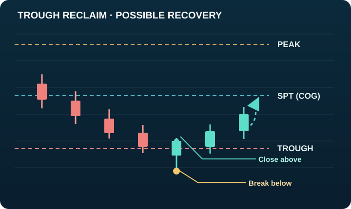

TROUGH · BREAK AND RECLAIM
Break below, close above
Price moves below the APA Trough during the candle, but closes back above it. This failed breakdown can create a possible recovery toward SPT (COG), and then Peak.
What to watch: the close above Trough and whether subsequent candles hold that boundary. SPT and Peak are potential observation levels, not promised targets.